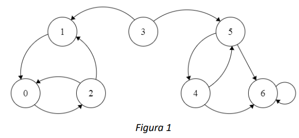
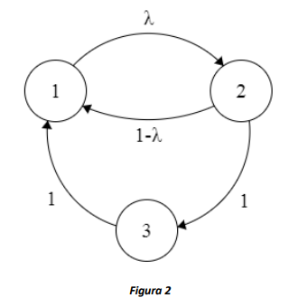

Clasificación de estados#
En este capítulo se presenta la definición de periodicidad e irreductibilidad de las cadenas de Markov, dos propiedades importantes cuando se quiere analizar el comportamiento de la cadena en el largo plazo. Para la construcción de estas propiedades, también se presentan ciertas clasificaciones de los estados y las cadenas de Markov.
Definiciones preliminares#
Definición 5.1.1:#
Sea una cadena de Markov con espacio de estados \(S\). Se conoce como un camino entre \(i\) y \(j\) \((i,j \in S)\) a una secuencia de arcos \(\left\lbrack a_{0},\ a_{1},\ldots,\ a_{k} \right\rbrack\) (que no necesariamente son todos) del diagrama de transiciones (o tasas) tal que el origen del arco \(a_{0}\) es \(i\), el destino de \(a_{k}\) es \(j\), el destino del arco \(a_{h}\) es el origen del arco \(a_{h + 1}\) (para \(h = 0,1,\ldots,k - 1\)), y la probabilidad (en el caso de cadenas de Markov de tiempo discreto) o la tasa (para cadenas de tiempo continuo) asociada a cada arco es mayor a cero (sin importar su magnitud).
Por ejemplo, en la cadena que se muestra en la Figura 1, un camino entre el estado 3 y el estado 6 está compuesto por el arco que conecta el estado 3 con el estado 5 y el arco que conecta el estado 5 con el estado 6.
Definición 5.1.2:#
Considere una cadena de Markov con espacio de estados \(S\). Si existe al menos un camino de \(i\) a \(j\ \)(\(i,j \in S\)) en el diagrama de transiciones, se dice que el estado \(j\) es alcanzable desde el estado \(i\) (y se nota como \(i \rightarrow j\)).
Esta es una relación transitiva, es decir:
Además, siempre se cumple que \(i \rightarrow i\).
En particular en el caso de las cadenas en tiempo discreto, que \(j\) sea alcanzable desde \(i\) significa que existe un \(n\) tal que \(P_{ij}^{n} > 0\).
Definición 5.1.3:#
Considere una cadena de Markov con espacio de estados \(S\) y un par de estados \(i,j \in S\). Si \(i \rightarrow j\) y \(j \rightarrow i\ \), se dice que el estado \(\mathbf{i}\) se comunica con el estado \(\mathbf{j}\) (y se denota \(i \leftrightarrow j\)). De la misma forma, \(j\) también se comunica con \(i\).
Se puede demostrar que esta es una relación transitiva, simétrica y reflexiva, por lo que se puede usar para crear una partición de \(S\) en clases.
Para el caso de la Figura 1, se puede afirmar que el estado 0 se comunica con el estado 1 dado que el estado 0 es alcanzable desde el estado 1, y viceversa.
Definición 5.1.4:#
Considere una cadena de Markov con espacio de estados \(S\). Un subconjunto de estados \(C \subseteq S\) es una clase comunicante si:
\({\forall\ i \in C,\ j \in C \Rightarrow i \leftrightarrow j\}\) \({\forall\ i \in C,\ i \leftrightarrow j \Rightarrow j \in C}\)
Esto es, todos los estados en \(C\) se comunican entre sí, y \(C\) es un conjunto máximo, esto quiere decir que no hay ningún estado \(k \in S \smallsetminus C\) que se comunique con algún estado en \(C\).
Definición 5.1.5:#
Considere una clase comunicante \(C\). Si no existe un par de estados \(i \in C\) y \(j \in S \smallsetminus C\) tal que \(i \rightarrow j\), \(C\) es una clase comunicante cerrada.
En la figura 1, los estados \(\{ 0,1,2\}\) conforman una clase comunicante cerrada dado que no hay ningún estado por fuera de la clase que sea alcanzable desde alguno de los estados en la clase comunicante.

Cadenas de Markov irreducibles#
Definición 5.2.1:#
Una cadena de Markov con espacio de estados \(S\) es irreducible si todos sus estados pertenecen a la misma clase comunicante, en otro caso se dice que la cadena es reducible.
Además, si la cadena es irreducible la totalidad del espacio de estados es también una clase comunicante cerrada.
Estados absorbentes, recurrentes y transitorios#
Definición 5.3.1:#
Un estado \(i \in S\) es absorbente si la probabilidad de hacer una transición de \(i\) a otro estado \(j \in S\), \(j \neq i\), es 0.
La identificación de un estado absorbente depende de la temporalidad de la cadena.
En las CMTD el estado \(i \in S\) es absorbente si el único elemento no nulo en la fila correspondiente a \(i\) en la matriz de probabilidades de transición a un paso \(\mathbb{P}\) está en la diagonal (y en este caso, por obvias razones, será 1). En resumen, se tendría que \(p_{ii} = 1\).
En las CMTC el estado \(i \in S\) es absorbente si todos los elementos de la fila correspondiente a \(i\) en la matriz de tasas de transición \(Q\) son iguales a cero.
Por ejemplo, el estado 6 de la figura 1 es un estado absorbente.
Definición 5.3.2:#
Una cadena de Markov es absorbente si contiene un conjunto de estados absorbentes \(A\), y para cualquier estado \(i \in S \smallsetminus A\), se tiene que \(i \rightarrow j\) para algún estado \(j \in A\).
Note que no todas las cadenas que tienen estados absorbentes son cadenas absorbentes. Por ejemplo, en la cadena que se muestra en la Figura 1, el estado \(6\) es absorbente pero no existen caminos entre \(0,\ 1\) o \(2\) y el estado absorbente, por lo que la cadena no es absorbente.
Definición 5.3.3:#
Un estado \(i \in S\) es recurrente si la cadena regresa a \(i\) con probabilidad\(\ 1\).
Esto quiere decir que si la cadena empieza en el estado \(i\), siempre va a regresar al estado \(i\) en algún momento (incluso si el número de transiciones o el tiempo que transcurre antes de que esto pase son muy grandes). Alternativamente, que un estado sea recurrente también implica que el número esperado de visitas a ese estado es infinito.
Definición 5.3.4:#
Un estado \(i \in S\) es recurrente positivo si además de ser recurrente, el valor esperado del tiempo entre visitas a \(i\) es finito.
Esta condición es más fuerte que la anterior ya que a un estado recurrente se podría volver con probabilidad 1, pero el valor esperado de regreso podría ser infinito. Esto sucede especialmente en cadenas con espacios de estado infinitos. Por ejemplo, si la cadena representa el número de personas en una cola, siempre es posible regresar al estado 0 (cola vacía), pero si las personas llegan mucho más rápido de lo que es posible atenderlas, el tiempo hasta volver a la cola vacía puede ser infinito, en valor esperado.
Definición 5.3.4:#
Un estado \(i \in S\) es transitorio si no es recurrente.
La recurrencia es una propiedad que se comparte en la clase comunicante, lo que hace más fácil identificar qué estados de una cadena son recurrentes o transitorios. Además, si una cadena es finita e irreducible se puede garantizar que todos sus estados son recurrentes.
Adicionalmente, en una cadena absorbente todos los estados que no son absorbentes son transitorios, y cada estado absorbente es recurrente.
Periodo de un estado en CMTDs#
Definición 5.4.1:#
En una CMTD, el periodo de un estado \(i \in S\) es el máximo común divisor de la longitud (es decir, el número de arcos que contiene) de todos los posibles caminos de \(i\) a \(i.\)
Ahora, si un estado \(i\) tiene periodo \(d\) no significa que la cadena visita el estado \(i\) cada \(d\) transiciones, sino que el número de transiciones entre cada visita a \(i\) es un múltiplo de \(d\).
Por ejemplo, en la CMTD representada por la Figura 2 cuando \(\lambda = 1\), todos los estados tienen periodo 3, pues estando en 1, la cadena puede volver a 1 en 3, 6, 9, … pasos (y lo mismo para los estados 2 y 3). Por otro lado, cuando \(\lambda < 1\), el periodo del estado 1 es 1, pues para volver a él la cadena puede pasar por 2 y 3, o ir a 2 y volver directamente, así obtenemos \(MCD(2,3) = 1\).

Definición 5.4.2:#
Un estado es aperiódico si tiene periodo 1.
Ya que la definición del periodo tiene que ver con el número de transiciones antes de volver a un estado, el periodo sólo se estudia en cadenas de Markov de tiempo discreto. Por definición, todos los estados de una cadena de Markov en tiempo continuo son aperiódicos. Además, al igual que la comunicación, la periodicidad sólo tiene que ver con la existencia de una transición (es decir, es de interés revisar las componentes no nulas de la matriz \(\mathbb{P}\), sin importar la magnitud).
De forma similar a la recurrencia, el periodo es una propiedad que se comparte entre clases comunicantes cerradas, lo que simplifica el cálculo del periodo para todos los estados de una cadena y da pie a la siguiente definición.
Definición 5.4.3:#
Una CMTD es periódica/aperiódica si todos los estados son periódicos/aperiódicos.
Cadenas ergódicas#
Definición 5.5.1:#
Una cadena de Markov de tiempo discreto finita es ergódica si es irreducible y aperiódica.
Una cadena de Markov de tiempo discreto infinita es ergódica si es irreducible, aperiódica y todos sus estados son recurrentes positivos.
Una cadena de Markov de tiempo continuo finita es ergódica si es irreducible.
Una cadena de Markov de tiempo continuo infinita es ergódica si es irreducible y todos sus estados son recurrentes positivos.
Que una cadena sea o no ergódica afecta el tipo de análisis que se puede hacer sobre el comportamiento del sistema en el largo plazo, como se mostrará en el siguiente capítulo, y permite determinar propiedades cualitativas de las distribuciones de la probabilidad de estado en el tiempo. Por ejemplo, en una cadena ergódica con más de un estado, la probabilidad de estar en un estado en el largo plazo nunca será 0 ni 1. En una cadena no ergódica, por ejemplo, absorbente, la probabilidad de estar en cada estado absorbente en el largo plazo es no-decreciente en el tiempo.